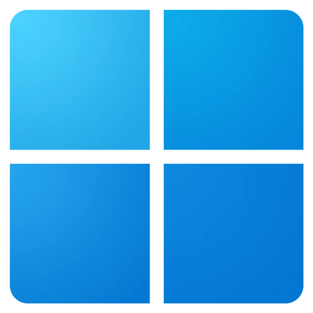

Microsoft Windows
Microsoft Windows – rodzina systemów operacyjnych stworzonych przez firmę Microsoft. Systemy rodziny Windows działają na telefonach, smartfonach, serwerach, systemach wbudowanych oraz na komputerach osobistych, z którymi są najczęściej kojarzone.
Ciekawostki:
- Pierwszy Windows 1.0, został wydany 20 listopada 1985 roku.
- Windows XP był najdłużej wspieranym systemem, od 2001 do 2014 roku.
- Windows 7 był pierwszym systemem, który udostępniał pełną wersję 64-bitową dla komputerów osobistych.